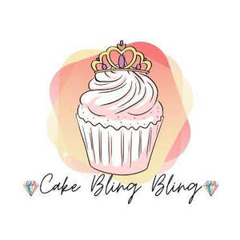

Trade Mark Journal No.2025/044 31 October 2025
UK00004280273 19 October 2025 (30)

- Class 30
- Candy cake decorations; Chocolate decorations for cakes; Candy decorations for cakes; Cake decorations made of candy; Christmas tree decorations [edible]; Decorations [edible] for christmas trees; Edible gold for decorating food and beverages; Cake frosting; Ornaments for christmas trees [edible]; Chocolate decorations for confectionery items; Candy cake; Icing for cakes; Crystallized sugar for decorating cakes; Chocolate decorations for christmas trees; Cakes; Cake icing; Cake frosting [icing]; Frosting [icing] (Cake -); Confectionery for decorating Christmas trees; Christmas trees (Confectionery for decorating -); Fruit cakes; Chocolate cake; Cake preparations; Chocolate cakes; Fruit cake snacks; Flavorings for cakes; Cupcakes; Edible wafers; Edible ice sculptures; Crackers [edible]; Edible ice; Edible fruit ices; Iced fruit cakes; Ice-cream cakes; Almond cake; Edible flour; Edible spices; Ices (Edible -); Edible ices; Edible paper; Edible paper wafers; Cake mixtures; Rice cake snacks; Chocolate covered cakes; Flavourings for cakes; Cake dough; Sauce [edible]; Chocolate-based fillings for cakes and pies; Sponge cake; Edible beeswax; Sponge cakes; Cake flour; Cream cakes; Cake doughs; Crystallized sugar for decorating food; Vegan cakes; Breakfast cake; Aromatic preparations for cakes; Plum cakes; Tea cakes; Dough for cakes; Edible honeycombs; Iced cakes; Iced sponge cakes; Custard-based fillings for cakes and pies; Edible ice powder for use in icing machines; Pastries, cakes, tarts and biscuits (cookies); Rice cakes; Cakes (Rice -); Cake powder; Powder (Cake -); Powder for making edible ices.
CAKE BLING BLING LTD